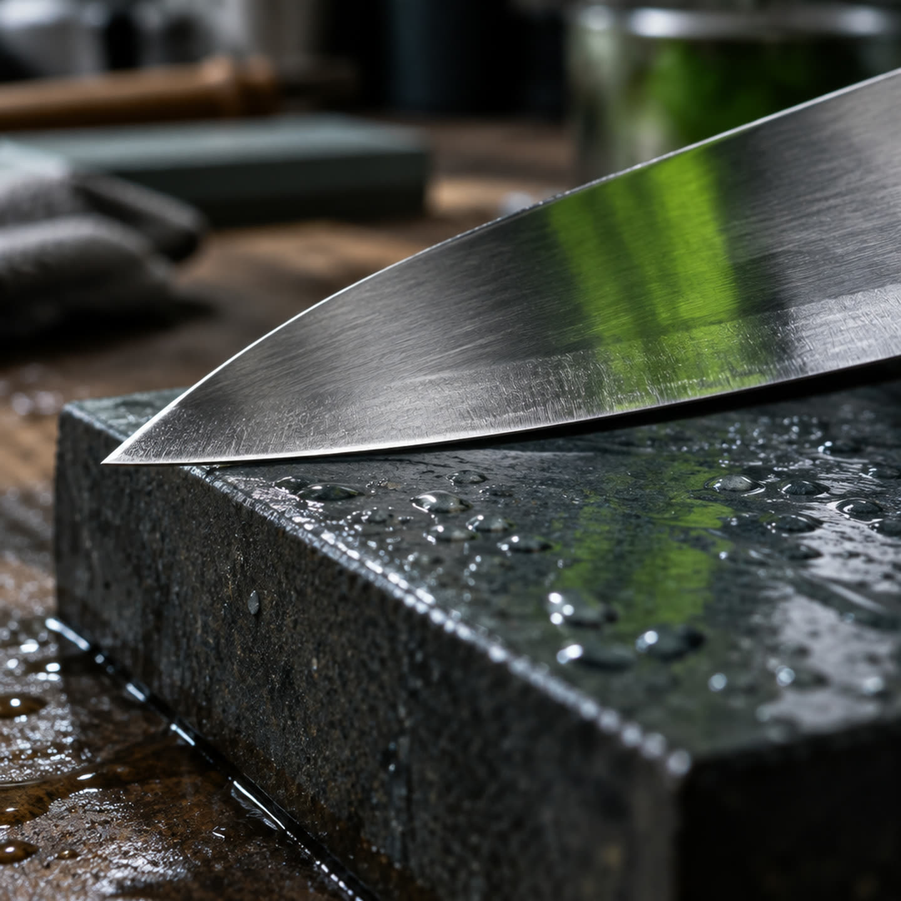

Кромка, которая режет, а не мнёт
Работаю со всеми сталями и любой геометрией клинка. Перед заточкой уточняю, как вы пользуетесь ножом: угол, финиш и абразивы подбираю под вашу задачу, а не по шаблону. Задача одна: чтобы работа ножом была удовольствием.

Угол и зерно решают больше, чем «острота»
Один и тот же нож можно наточить так, что он будет резать помидор и не сможет рубить хрящ, и наоборот. Подвиньте ползунки: увидите, как меняется кромка и для чего она годится.
20° — рабочий универсал: держит удар, не выкрашивается на костях, режет уверенно. Хороший выбор, если нож один и для всего.
В принципе, всё — от мультитула до коллекционного
Заточка с любой геометрией клинка и из любой стали с любой термообработкой. Ниже — то, с чем сталкиваюсь чаще всего.
Что могу сделать
От простой правки до перетачивания подводов и ремонта осевого узла. Если задача нестандартная — напишите, обсудим по фото.
- Заточка любой геометрии — прямые, сканди и конвекс (линзовидные) подводы
- Любая сталь — с любой термообработкой и уровнем твёрдости
- Серрейтор — правка и заточка зубчатых подводов режущей кромки
- Перетачивание подводов — например, перевод на конвекс, когда это оправдано задачей
- Ремонт и обслуживание — смазка, полировка или замена шайб осевого узла, коррекция механики
- Исправление после чужой заточки — когда кромку и подводы уже «посадили»
- Восстановление повреждений — сколы и замины на режущей кромке после физических нагрузок
- Финиш по задаче — от агрессивного реза до полированной доводки
За что не возьмусь
Это не скромность, а профессиональная гигиена: есть работы, после которых нож теряет то, за что его покупали.
- Серьёзное изменение геометрии клинка — если после этого нож перестанет выполнять свою задачу, я откажусь
- Полировка и сатинирование спусков — это отдельная операция с риском для внешнего вида
- Spyderco Matriarch и Civilian — специфическая геометрия, за такие модели не берусь
Чем работаю
Абразив подбирается под сталь и задачу: одно и то же зерно на разных связках ведёт себя по-разному.
Соберите задачу — пришлю рекомендацию
Выберите нож, сталь и что для вас важнее. Ниже появится угол и финиш, которые я бы предложил, и вопрос, который уточню перед работой.
Универсальный угол для кухни: держит кромку на доске, не выкрашивается.
Вопросы и фото — в личные сообщения
Telegram и Viber — поиск по любому из этих номеров. Пришлите фото клинка и пару слов о задаче: скажу, что реально сделать и в каком объёме. Конечная стоимость зависит от сложности и объёма работы. Номера лучше сохранить — они пригодятся.